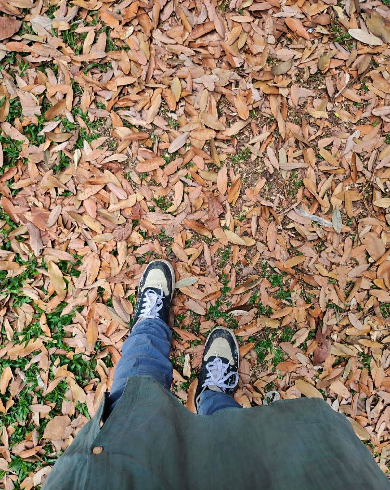

So Many Firsts happened!
Nusrat AnikahThe other day, lying in bed I felt my heart beating for the first time in a long while. I realized how little I live in my body, and how much in my mind. So many thoughts that hold me back sometimes. Among all of the thoughts, the thought that things might not work out scares me the most. That doesn't let me try anything new or even the things that I'm actually good at. I grew up being afraid of almost everything and went inside my head. My mind is not plain or a static line, I live in my mind most of the time. When I used to look around and see people of my age doing so many things at the same time; sometimes I used to feel like I want to do those things too even though I am not comfortable with doing them. I know I don't know the names of foods, and I don't even know how to order something. I never learned something that required me to live outside of my room. I never leave my room, not even for some minutes, unless it's an emergency. Yet I never felt like I haven't lived my life. Because I knew that's me and I don't have a problem living like this. I have my own heart, soul, and mind. I am me and it has taken me years to realize how important that is. But you know still, there is always something in my mind that I don't understand. There is always noise. I don't understand its meaning, nor do I understand being trapped in it. Sometimes I'm not sure what I mean. And if I could, I'm not sure I'd feel like it. Sometimes I live in the past. I feel stuck in memories and the things I've done wrong. I live in some illusion that one morning it will vanish.
My Day
I forgot for a while that sometimes spending time with certain people makes everything better. And it actually happened. Sometimes relationships are just made. You don't have to do anything to make these bonds. It just happens. The little voice inside my head that always used to say "Do it", knowing that I'm not comfortable doing it. I always ignored that voice. I was afraid I guess that I might able to do it or that the thing isn't just for me to try. But I'm learning to appreciate that little voice. I actually want to thank that little voice; whoever has put that in my head, I'll be forever grateful. 3 months of 2023 and so many firsts have already happened. From being unable to make friends to being friends with some fantastic people. From staying quiet; no matter what people say or do, to taking a stand for myself when the world was against me. From rarely being able to plan a perfect friends day out, to planning them on every Monday. From not being able to have street foods more often, to trying them almost every day. From being scared of needles, to donating blood for the first time. I made little progress every day. I'm still making them. All of these happened because of that voice; that is always cheering me up, no matter what happens. I'm still trying to make myself a little digestible, a little bit easy to love, and a human who can make a difference.